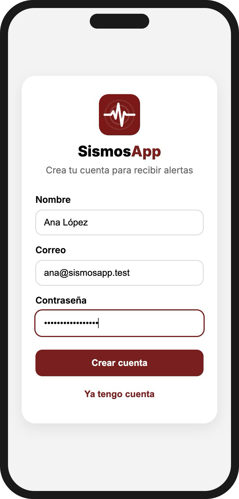
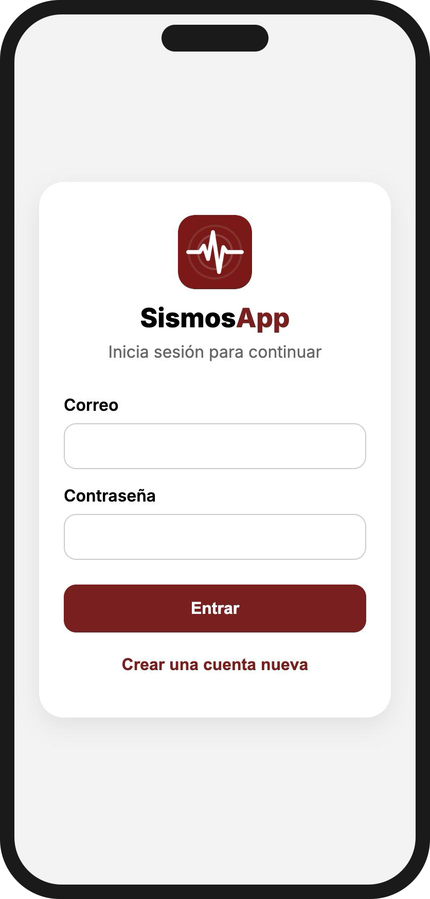
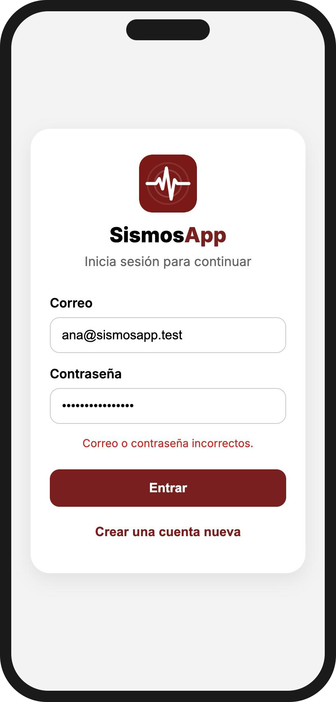
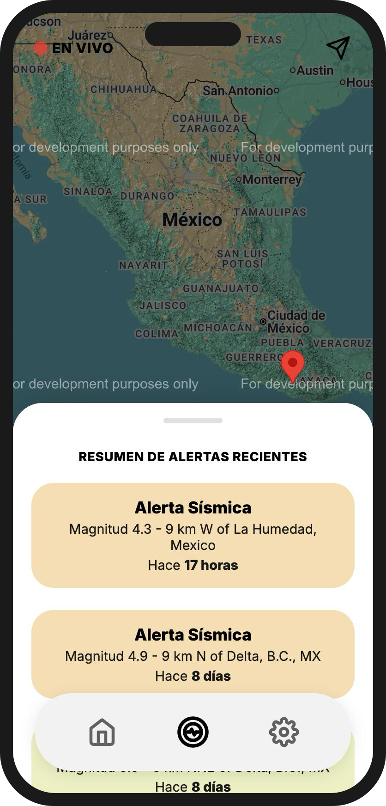

MANUAL TÉCNICO Y DE USUARIO
SismosApp
Monitoreo de actividad sísmica en México
Cristóbal Fernando Gordillo Bermúdez · Elizabeth Alba Bustamante · Angel Demetrio Vazquez Peralta
SismosApp – AxoloteSistem · Noviembre de 2026
Introducción
SismosApp es una aplicación web progresiva (PWA) para consultar la actividad sísmica reciente en México desde un celular, una tableta o una computadora.
Muestra los sismos más recientes sobre un mapa interactivo y los resume en tarjetas de alerta con su magnitud, su ubicación y el tiempo transcurrido. Cada persona entra con su propia cuenta, protegida con un token JWT.
El proyecto tiene dos partes que trabajan unidas: un frontend en Angular, que es lo que ve el usuario, y un backend en Spring Boot con PostgreSQL, que guarda las cuentas y atiende el API.
Justificación
México se encuentra en una de las zonas con mayor actividad sísmica del mundo: en su territorio interactúan cinco placas tectónicas (Norteamérica, Cocos, Pacífico, Rivera y Caribe). Los sismos son parte de la vida diaria de millones de personas.
La información sobre un sismo existe, pero está dispersa en portales técnicos, redes sociales y noticias. Después de un movimiento, una persona necesita saber rápido dónde fue, de qué magnitud y hace cuánto, sin interpretar tablas técnicas. SismosApp concentra esa información en una sola pantalla, clara y pensada para el celular.
Objetivo
Objetivo general
Desarrollar una aplicación web progresiva que permita a cualquier persona en México consultar la actividad sísmica reciente de forma clara, rápida y segura, desde cualquier dispositivo.
Objetivos específicos
- Mostrar los sismos recientes en un mapa interactivo y en tarjetas de alerta.
- Unir el frontend con un API REST propio para el registro y el inicio de sesión con JWT.
- Proteger los datos personales: derechos ARCO por HTTP y política de no eliminación.
- Hacer la aplicación instalable (PWA) en celulares y computadoras.
- Levantar el servicio en un dominio local accesible desde otros dispositivos.
- Medir la experiencia de los usuarios con una encuesta y graficar sus resultados.
Identidad de marca
Logotipo
El logotipo une un ícono y la palabra SismosApp. El ícono es el trazo de un sismograma: la línea que dibuja un sismógrafo cuando la tierra se mueve. Los anillos del fondo representan las ondas sísmicas que se alejan del epicentro. La forma cuadrada con esquinas redondeadas es la de un ícono de aplicación, porque SismosApp se instala y se abre como una app. En la palabra, «Sismos» va en tinta y «App» en vino.


Construcción y usos

Área de respeto. Alrededor del ícono se deja libre un margen igual a x, la décima parte de su ancho. Ningún texto ni imagen debe invadirlo.
Tamaño mínimo. El ícono, 24 px en pantalla u 8 mm impreso. El logotipo completo, 120 px de ancho.
Usos incorrectos:
- Cambiar los colores o usar degradados.
- Deformar, girar o inclinar el logotipo.
- Colocarlo sobre fotos o fondos que le quiten contraste.
Color
#7A1F1F
Ícono, botones y títulos
#5A1414
Fondos de cierre y énfasis
#E9C9C5
Apoyo, etiquetas y gráficas
#F6F1EE
Fondos claros y tablas
#1A1A1A
Texto y logotipo
Tipografía
El logotipo usa Avenir Next Bold. La aplicación usa Inter, diseñada para leerse bien en pantallas pequeñas.
Desarrollo
Herramientas, lenguajes y arquitectura con los que se construyó SismosApp.
Herramientas y lenguajes
| Capa | Herramienta o lenguaje | Versión | Para qué se usa |
|---|---|---|---|
| Frontend | TypeScript | 6.0 | Lenguaje de toda la interfaz |
| Frontend | Angular | 22.2 | Framework: componentes, rutas, formularios y señales |
| Frontend | SCSS | — | Estilos de cada pantalla |
| Frontend | Angular Service Worker | 22.2 | Convierte la app en PWA: instalación y uso sin conexión |
| Frontend | Google Maps JavaScript API | — | Mapa interactivo con la ubicación de los sismos |
| Datos | API del USGS | — | Fuente pública de los sismos recientes |
| Backend | Java | 17 | Lenguaje del API |
| Backend | Spring Boot | 3.5 | Servidor web, API REST y entrega de la app compilada |
| Backend | Spring Security + JWT | jjwt 0.12 | Inicio de sesión, tokens y OAuth 2.0 |
| Backend | Spring Data JPA (Hibernate) | — | Acceso a la base de datos |
| Base de datos | PostgreSQL | 18 | Usuarios, sismos, contactos y solicitudes ARCO |
| Apoyo | Maven, npm, Git, VS Code, DBeaver, Postman | — | Compilación, versiones, edición, base de datos y pruebas del API |
Arquitectura
Una sola laptop hace de servidor. Spring Boot entrega la aplicación Angular ya compilada y atiende el API en el mismo dominio y puerto: http://sismosapp.local:8080.
- Los dispositivos se conectan por la red local. La laptop anuncia el dominio
sismosapp.localcon mDNS (Bonjour), así que nadie tiene que escribir una IP. - Los sismos y el mapa llegan directo de internet: del USGS y de Google Maps. Por eso la red local debe tener salida a internet, por ejemplo el hotspot de un celular.

Unión de frontend y backend
- Una sola entrega.
ng buildcompila el frontend endist. Spring Boot sirve esos archivos y las rutas/loginy/homesiempre devuelven la aplicación. - Registro e inicio de sesión reales. El formulario llama a
POST /api/auth/registroyPOST /api/auth/login. El backend valida los datos, guarda la contraseña como hash BCrypt y responde un token JWT. - Sesión con token. El frontend guarda el token y un interceptor lo envía en
Authorization: Beareren cada llamada a/api. Un guardia de rutas impide entrar a la pantalla principal sin sesión.
Los errores del backend llegan como JSON y el formulario muestra su mensaje, por ejemplo «Correo o contraseña incorrectos».
Archivos clave
| Archivo | Qué hace |
|---|---|
auth.service.ts | Llama al API, guarda la sesión y expone el usuario |
auth.interceptor.ts | Agrega el token JWT a las llamadas a /api |
auth.guard.ts | Protege la ruta /home |
AuthController.java | Atiende el registro y el inicio de sesión |
SecurityConfig.java | Define qué rutas son públicas y cuáles piden token |
FrontendController.java | Entrega la app en las rutas del frontend |
proxy.conf.json | En desarrollo (ng serve) reenvía /api al backend |
Levantar el servicio local
Se levanta en la laptop servidor con un solo script. Pide el usuario, la contraseña y el nombre de la base de PostgreSQL; la contraseña no se guarda en ningún archivo.
# 1) Una sola vez: publicar el dominio local sudo scutil --set LocalHostName sismosapp # 2) Cada vez: compilar y arrancar cd sismos-app npx ng build ./backend/run-local.sh
| Dirección | Qué responde |
|---|---|
http://sismosapp.local:8080 | La aplicación (pantalla de inicio de sesión) |
/api/auth/registro y /api/auth/login | Crear cuenta e iniciar sesión |
/api/sismos | Sismos guardados en la base |
/api/arco/... | Derechos ARCO, con token |
/oauth2/token | Token OAuth 2.0 para clientes como Postman |
El detalle de OAuth 2.0, JWT, derechos ARCO y la colección de Postman está en el «Manual de conexión y pruebas del API».
Uso de la app
Esta sección se ampliará con una explicación de la app y de cada uno de sus componentes: qué hace cada botón, cada formulario y cada zona de la pantalla.
Mientras tanto, estas son las pantallas con las que se trabajará:




PWA en los dispositivos
SismosApp es una aplicación web progresiva: una página web que se instala y se comporta como una app.
| Pieza | Qué aporta |
|---|---|
manifest.webmanifest | Nombre, ícono, color y modo de pantalla completa |
Service worker (ngsw-worker.js) | Guarda la aplicación en el dispositivo y la abre sin conexión |
| Íconos de 192 y 512 px | El ícono de SismosApp en la pantalla de inicio |
| Caché de datos | Conserva los últimos sismos consultados hasta por un día |
Cómo se instala
| Dispositivo | Pasos |
|---|---|
| Android (Chrome) | Abrir la dirección → menú ⋮ → Instalar app o Agregar a pantalla principal |
| iPhone / iPad (Safari) | Abrir la dirección → botón Compartir → Agregar a inicio |
| Computadora (Chrome o Edge) | Abrir la dirección → ícono Instalar en la barra de direcciones |
http://sismosapp.local la app se usa desde el navegador; para instalarla en celulares se publica con HTTPS.Publicar con HTTPS
La laptop servidor publica la app en una dirección HTTPS por medio de un túnel seguro de Cloudflare. No hace falta comprar un dominio ni configurar certificados.
- Arranque el servicio local con
./backend/run-local.shy deje esa terminal abierta. - En otra terminal ejecute
./backend/publicar-https.sh. - El script muestra una dirección como
https://nombre-al-azar.trycloudflare.com. - Abra esa dirección en el celular e instale la app con los pasos anteriores.
- Para dejar de publicar, presione Ctrl+C en la terminal del túnel.
| Característica | Detalle |
|---|---|
| Dirección | Cambia cada vez que se ejecuta el script |
| Alcance | Funciona desde cualquier red con internet, no solo el hotspot |
| Duración | Solo mientras la terminal del túnel está abierta |
| Datos | La app y la base siguen en la laptop; el túnel solo transporta el tráfico cifrado |
Métricas de uso
La experiencia de los usuarios se mide con una encuesta de usabilidad que cada persona responde después de usar la aplicación. El formulario es un documento aparte: descargar encuesta.
Cómo se aplica
- La persona recibe la dirección de la app y tres tareas: crear su cuenta, ubicar un sismo en el mapa e instalar la app.
- Usa la aplicación sin que nadie le explique cómo.
- Al terminar, responde la encuesta.
Qué se mide
- Facilidad de uso: si resulta complicada y qué tan rápida se siente.
- Tareas completadas sin ayuda: crear cuenta, iniciar sesión, ubicar un sismo e instalar la app.
- Satisfacción: colores, diseño, recomendación y sugerencias.
Cómo leer los resultados
| Métrica | Cómo se calcula | Meta |
|---|---|---|
| Facilidad de uso | Promedio de la calificación de facilidad de uso (de 1 a 5) | 4 o más |
| Éxito por tarea | Porcentaje de «Sí» en cada tarea (cuenta, sesión, mapa, instalación) | 80 % o más |
| Velocidad percibida | Promedio de la calificación de velocidad (de 1 a 5) | 4 o más |
| Recomendación | Porcentaje de «Sí» en la pregunta de recomendación | 75 % o más |
Una tarea por debajo de su meta señala la pantalla que conviene mejorar primero. Las respuestas abiertas explican el porqué.
Resultados obtenidos
Las gráficas y esta tabla se llenarán cuando se aplique la encuesta a los usuarios.
| Dato | Valor |
|---|---|
| Personas encuestadas | Pendiente |
| Fechas de aplicación | Pendiente |
| Facilidad de uso (promedio) | Pendiente |
| Tarea con menor éxito | Pendiente |
| Recomendación (% de «Sí») | Pendiente |
Conclusión
Técnicamente, SismosApp ya reúne en una sola pantalla dónde, de qué magnitud y hace cuánto ocurrió cada sismo reciente, y lo hace desde cualquier dispositivo. El frontend y el backend trabajan unidos en un mismo servidor y dominio. Las cuentas son reales, las contraseñas se guardan cifradas y cada sesión se protege con un token JWT. El proyecto respeta los datos personales: los derechos ARCO se ejercen por HTTP y ningún dato ingresado se elimina.
¿Funciona la app para el usuario final?
La respuesta (sí o no) depende de los resultados de la encuesta. Será «sí» si se cumplen las metas de la sección 08: facilidad de uso de 4 o más, 80 % o más de éxito por tarea y 75 % o más de recomendación.
sismosapp.local y publicación con HTTPS · Encuesta de usabilidad elaborada.